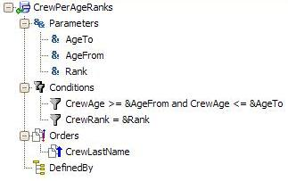

Printing Commands Summary
GeneXus provides developers with a solid set of printing commands to generate reports easily and comfortably. This set of commands, which is listed in the table below, is used in Procedures to control and send printing jobs. A description of each command is provided in the table below, to help you understand what they do:
Â
The Measurement unit used is the User Space Units. This User space unit is approximately the same as the unit used in the printing industry which is the Point (pt) unit. ExampleThis example explains how to obtain a statistical report of all the crew members of an airline whose ages are in a given range, and whose ranks (Commander, Copilot, etc.) also match a given grade. These values are received by parameters through previously requested variables. Since the process of accessing the database and selecting the data is carried out as follows:
For each order CrewLastName
where CrewAge >= &AgeFrom
where CrewAge <= &AgeTo
where CrewRank = &Rank
...
EndFor
...and it is used in many places (reports, processes, etc.) in the project, a Data Selector object has been programmed as a navigation object that can be reused from other objects. This Data Selector, called CrewPerAgeRanks, has the following structure:  The following group of print blocks has been designed within the Procedure object called AgesAndRanks: The following rules have been applied to the procedure: Lastly, the following source code has been programmed: The first group of lines sets the margins and length of the page, in lines. Next is the Header group, which is accessed by GeneXus only when a start page is detected. The body made up by only one line, prints the Header print block. The same happens with the Footer group, which is accessed when a page change is detected. Note that the Data Selector object is used in the relevant For Each group. Whenever valid information is found, it will be printed in the body of the For Each. Basic ConsiderationsTo obtain the output report, remember that:
When using a Graphic format such as PDF is not supported by the PL command. To get a custom report, modify the Paper Width and Paper Height Procedure's layout properties and use MT and MB commands when needed.
|

| Backlinks | |||
| Code Blocks | Footer Command | Footer on last page property | |
| Line Variable | MB | MT | PL |
| Print Blocks | Print Command | Procedure Layout | Category:Procedure object |